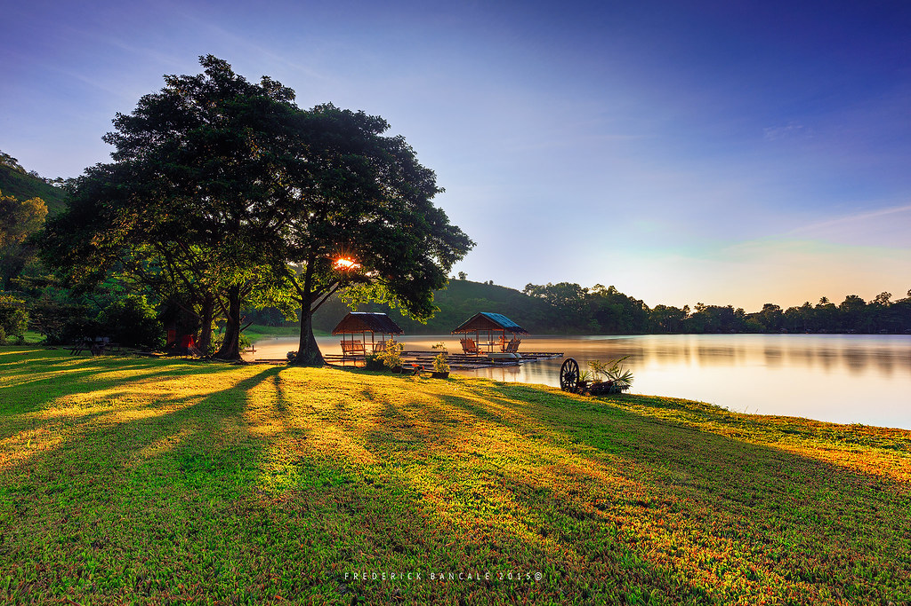
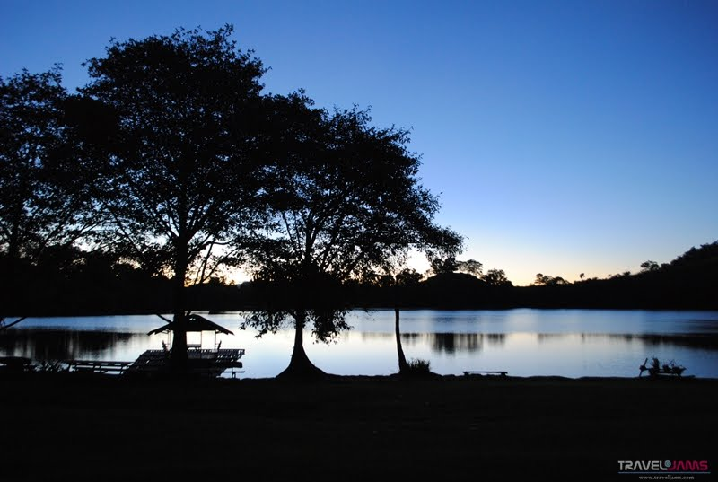
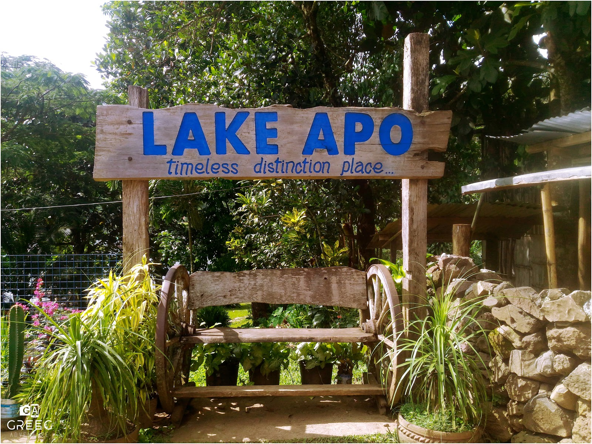

REPUBLIC OF THE PHILIPPINES
REPUBLIC OF THE PHILIPPINES






Lake Apo is a pristine volcanic crater lake nestled in the highlands of Valencia City, Bukidnon, sitting at over 900 meters above sea level. Surrounded by dense forests and known for its striking emerald-green waters, it is one of Mindanao's most breathtaking natural attractions.
The lake holds deep cultural and spiritual significance for the Higaonon people, who have lived alongside its shores for generations. Its unique ecosystem supports rare endemic species, making it both a nature lover's paradise and a living cultural heritage site that continues to inspire wonder and reverence.
Lake Apo's story is deeply woven into the lives and spirituality of the Higaonon people of Bukidnon.
Lake Apo is considered a sacred site by the Higaonon indigenous people. It plays a central role in their spiritual rituals, oral traditions, and ancestral beliefs about the origin of their community.
Recognized as a protected natural heritage area, Lake Apo is governed by conservation guidelines to preserve its ecosystem, water quality, and the ancestral lands of the surrounding Higaonon communities.
The Higaonon conduct regular rituals and ceremonies on the lake's shores — harvest thanksgiving rites, healing ceremonies, and community gatherings practised for centuries.
The Higaonon communities surrounding Lake Apo have cultivated Arabica coffee for generations — a practice that sustains their livelihood and produces some of the Philippines' finest specialty coffee.
Lake Apo is one of the most biodiverse areas in Mindanao — a sanctuary for rare and endemic species.
Lake Apo is one of the few places in the Philippines where you can spot the Philippine Eagle in its natural highland habitat. The majestic national bird soars over the lake's forested slopes — an awe-inspiring sight for birdwatchers and nature lovers.
The surrounding forests shelter over 50 species of birds, including several endemic Mindanao species found nowhere else in the world. Along with its avian residents, the lake supports rare freshwater fish, amphibians, native orchids, and ferns that thrive in its unique high-altitude ecosystem.
One of the most endangered birds in the world, the Philippine Eagle can be spotted soaring over Lake Apo's highland forests — a rare and unforgettable wildlife encounter.
Over 50 bird species have been recorded around Lake Apo, including endemic Mindanao species — making this a premier destination for birdwatching in the Philippines.
The forests shelter rare native orchids and highland wildflowers found nowhere else on earth — a botanical treasure trove that delights hikers and plant enthusiasts.
Lake Apo's waters support endemic freshwater fish species unique to the lake ecosystem — an important scientific resource and symbol of Bukidnon's natural wealth.
Structures around Lake Apo blend indigenous Higaonon traditions with natural materials to create harmonious lakeside spaces.
Traditional floating cottages sit gently on the lake's emerald surface, offering visitors an immersive experience surrounded by water, mist, and the sounds of highland nature.
Rest houses, viewpoints, and community halls are built from locally sourced bamboo and native timber — eco-friendly structures that blend seamlessly with the lake's natural environment.
Elevated viewing decks and observation platforms offer panoramic views of the crater lake, surrounding highland forests, and distant mountain ridges — perfect for photography and contemplation.
Structures around the lake incorporate Higaonon cultural motifs — traditional patterns, carvings, and color symbolism that tell the story of the indigenous community's deep connection to the lake.
Take a piece of Lake Apo home — each product tells a story of the land and its people.
Specialty highland Arabica coffee grown by Higaonon farmers on the slopes surrounding Lake Apo. Available as whole beans, ground coffee, and drip bags — a premium take-home gift for coffee lovers.
Handwoven baskets, bags, and textiles crafted by Higaonon artisans using traditional techniques passed down through generations. Every piece is unique and culturally significant.
Beautiful beaded necklaces, bracelets, and accessories made by local craftspeople following indigenous Higaonon patterns and color symbolism. Wearable cultural souvenirs with deep meaning.
Fresh highland vegetables, native herbs, and dried fruits produced by farmers in the Lake Apo area using organic methods. Healthy, fresh, and straight from highland farms to your table.
Plan a respectful, safe, and memorable visit to this sacred natural wonder.
From Valencia City, take a habal-habal or jeepney toward the lake area (~30–45 mins). Alternatively, hire a private vehicle from Malaybalay City. Organized tours are also available.
Always hire a registered Higaonon guide. They provide cultural context and safety on forest trails. Their fees directly support the local indigenous community and families.
Lake Apo is a sacred site. Ask permission before photographing community members, avoid loud noise near ceremony areas, and strictly follow all instructions from your guide.
The lake is most photogenic in the early morning (6–8 AM) when mist drifts over the emerald surface and soft light filters through the surrounding highland forest.
The lake area can be cool and misty. Bring a light jacket, wear comfortable walking shoes, and apply insect repellent before walking forest trails around the lake.
Help preserve this sacred natural space. Carry out all trash, avoid picking plants or disturbing wildlife, and stay strictly on designated paths at all times.
March 21 – April 23
Experience the vibrant culture of Bukidnon! Celebrate the rich traditions of Bukidnon's seven indigenous groups — Higaonon, Manobo, Matigsalug, Talaandig, Tigwahanon, and Umayamnon. Don't miss the colorful festivities, cultural performances, and a showcase of indigenous heritage!
Let our tourism team help you plan an unforgettable lakeside experience.